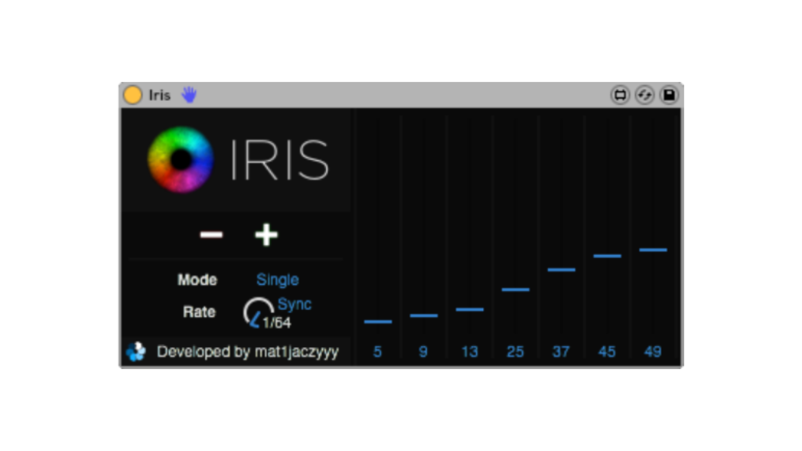
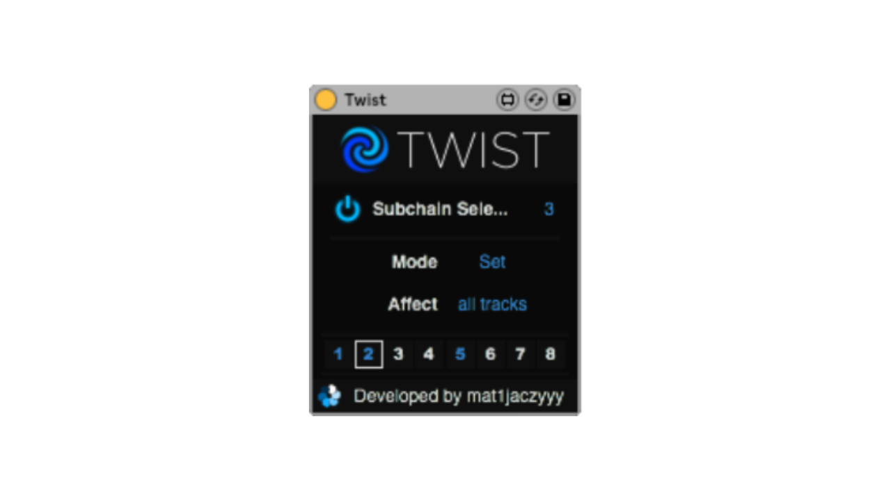
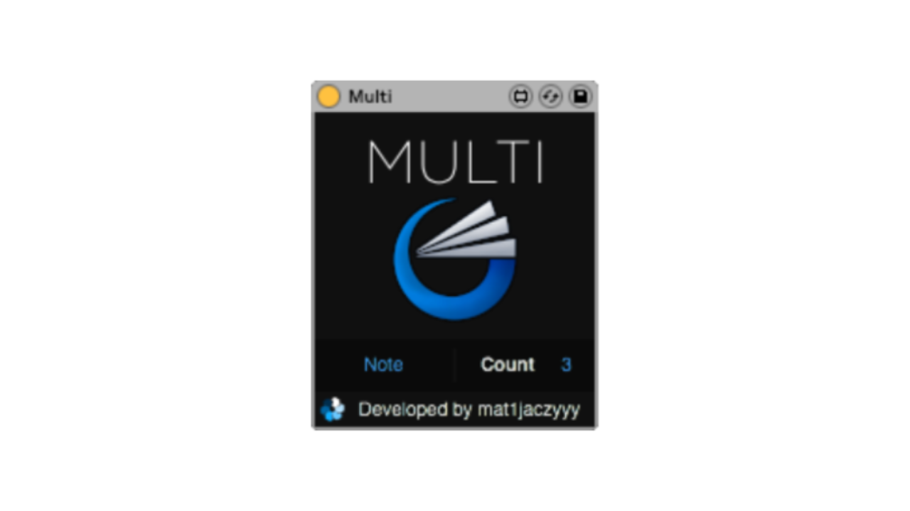
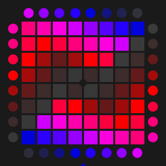

Home
Project Files
Setup
About
Setup
My used softwares, plugins and Max4Live (M4L) devices to create launchpad covers
Click on image to purchase or download, hover for more info, click on text to visit authors' official site.
Main Softwares
Ableton Live 10 Suite
Apollo Studio
Max4Live devices
Input Manager by Kaskobi
Output Manager by Kaskobi
MIDIExt by Kaskobi
MIDIExt Slim by Kaskobi
Eyedrop by Kaskobi
Lightweight by mat1jaczyyy
Depths by mat1jaczyyy

Iris by mat1jaczyyy

Twist by mat1jaczyyy

Multi by mat1jaczyyy
Other utilities

Launchpad PRO MK1 CFW by mat1jaczyyy